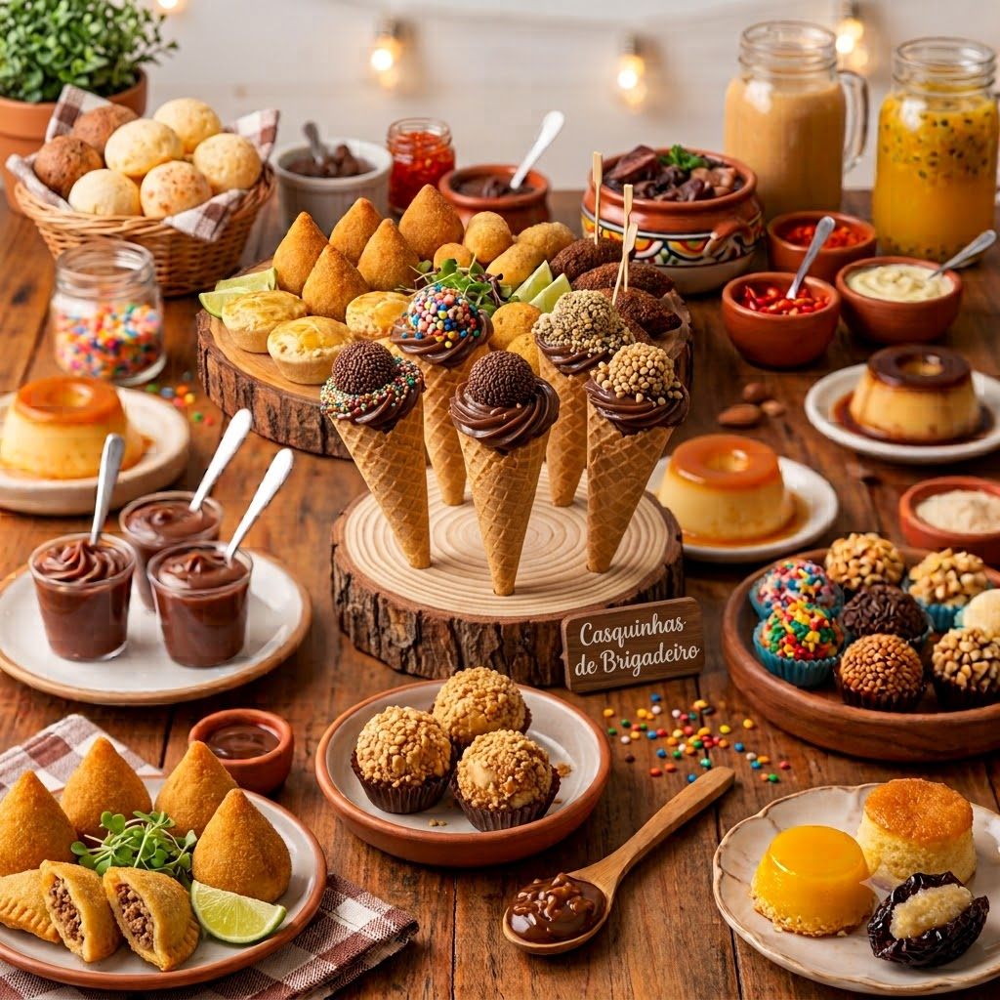
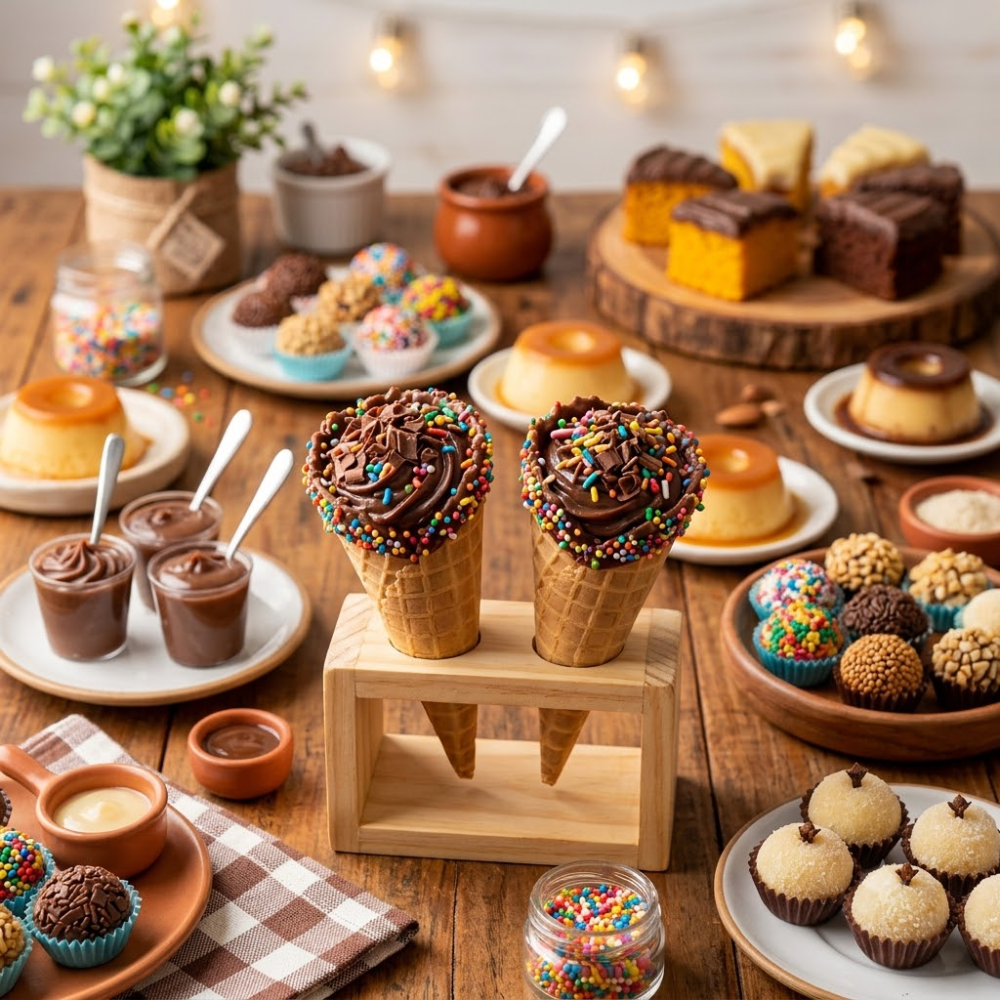
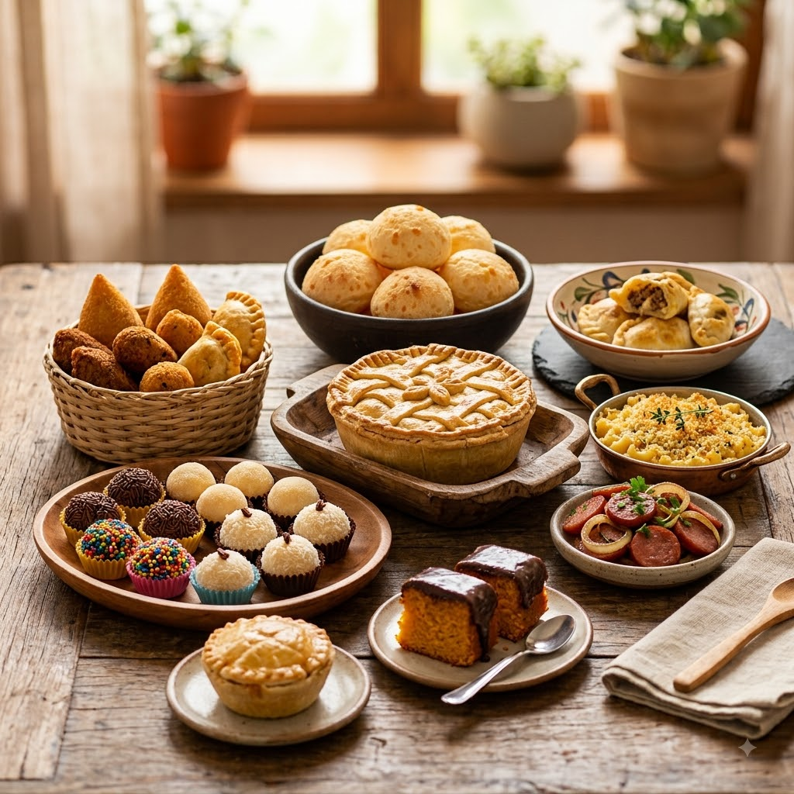

Histórias da confeitaria
Por: Ana Julia Bobato
Boas vindas ao meu blog! Aqui você ficará informado sobre o conteúdo relacionado à confeitaria e culinária.
Fonte: EnsinE
Irei compartilhar textos sobre a culinária e receitas

Boas vindas ao meu blog! Aqui você ficará informado sobre o conteúdo relacionado à confeitaria e culinária.
Fonte: EnsinE

Além de ser uma fonte de prazer e cultura, a confeitaria tem um grande impacto na geração de emprego e renda no Brasil. De acordo com a ABICAB, o setor de confeitaria emprega diretamente mais de milhares de pessoas e indiretamente cerca de 300 mil pessoas, em toda a cadeia produtiva, desde a agricultura até o comércio. Além disso, a confeitaria oferece oportunidades para empreendedores e pequenos negócios, como docerias, confeitarias, padarias e lojas de produtos artesanais. Esses negócios são essenciais para a economia local, .
Fonte: EnsinE

Boas vindas ao meu blog! Aqui você ficará informado sobre o conteúdo relacionado ao tema.
Fonte: EnsinE